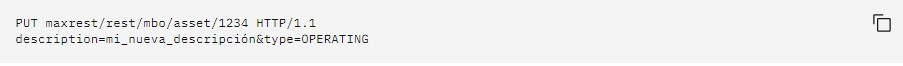
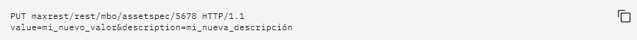

Este método crea/carga un nuevo recurso al servidor, o en caso de que el objeto ya exista en el servidor
reemplaza el recurso existente con el recurso que se carga.
Ejemplo: actualizar un activo
El método siguiente actualiza el activo que tiene el ID 1234. La descripción del activo se cambia por mi_nueva_descripción
y el tipo se cambia por OPERATING:

Ejemplo: actualizar un objeto
El método siguiente actualiza el objeto de negocio assetspec, que es un nivel inferior de asset. El valor se cambia por
nuevo_valor y la descripción se cambia por mi_nueva_descripción:
